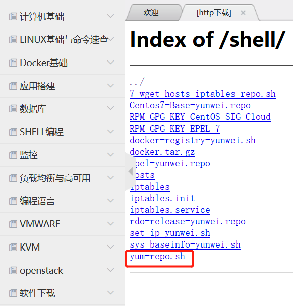

第3篇K8S集群部署
一、利用ansible部署kubernetes准备：
集群介绍
本系列文档致力于提供快速部署高可用k8s集群的工具，并且也努力成为k8s实践、使用的参考书；基于二进制方式部署和利用ansible-playbook实现自动化：既提供一键安装脚本，也可以分步执行安装各个组件，同时讲解每一步主要参数配置和注意事项；二进制方式部署有助于理解系统各组件的交互原理和熟悉组件启动参数，有助于快速排查解决实际问题。
版本组件
kubernetes v1.9.7
etcd v3.3.4
docker 18.03.0-ce
calico/node:v3.0.6
calico/cni:v2.0.5
calico/kube-controllers:v2.0.4
centos 7.3+
集群规划和基础参数设定
1、高可用集群所需节点配置如下：
- 部署节点 x1 : 运行这份 ansible 脚本的节点
- etcd节点 x3 : 注意etcd集群必须是1,3,5,7...奇数个节点
- master节点 x1 : 运行集群主要组件
- node节点 x3 : 真正应用部署的节点，根据需要增加机器配置和节点数
2、在部署节点准备ansible：使用ansible的doker环境启动
（1）下载内部源配置脚本

sh yum-repo.sh
（2）下载并安装docker
ls
tar zxvf docker.tar.gz
ls
cd docker/
ls
sh docker.sh
systemctl status docker
docker images

（3）下载并运行docker版ansible
docker pull reg.yunwei.edu/learn/ansible:alpine3
docker run -itd -v /etc/ansible:/etc/ansible -v /etc/kubernetes/:/etc/kubernetes/ -v /root/.kube:/root/.kube -v /usr/local/bin/:/usr/local/bin/ 1acb4fd5df5b /bin/sh
（4）配置每台机器之间主机名以及解析

（5）进入ansible容器，配置免密登录
#ssh-keygen 回车 回车 回车
#ssh-copy-id $Ips #$IPs为所有节点地址包括自身，按照提示输入yes 和root密码
测试各节点是否正常

（6）
3、在部署节点上传ansible工作文件如下：

#cp /etc/ansible/example/hosts.s-masters.example /etc/ansible/hosts
#vi /etc/ansible/hosts
# 部署节点：运行ansible 脚本的节点
[deploy]
192.168.254.20
# etcd集群请提供如下NODE_NAME、NODE_IP变量,请注意etcd集群必须是1,3,5,7...奇数个节点
[etcd]
192.168.254.21 NODE_NAME=etcd1 NODE_IP="192.168.254.21"
192.168.254.22 NODE_NAME=etcd2 NODE_IP="192.168.254.22"
192.168.254.23 NODE_NAME=etcd3 NODE_IP="192.168.254.23"
[kube-master]
192.168..254.21 NODE_IP="192.168..254.21"
[kube-node]
192.168.254.21 NODE_IP="192.168.254.21"
192.168.254.22 NODE_IP="192.168.254.22"
192.168.254.23 NODE_IP="192.168.254.23"
[all:vars]
# ---------集群主要参数---------------
#集群部署模式：allinone, single-master, multi-master
DEPLOY_MODE=single-master
#集群 MASTER IP
MASTER_IP="192.168.254.21"
#集群 APISERVER
#TLS Bootstrapping 使用的 Token，使用 head -c 16 /dev/urandom | od -An -t x | tr -d ' ' 生成
BOOTSTRAP_TOKEN="d18f94b5fa585c7123f56803d925d2e7"
# 集群网络插件，目前支持calico和flannel
CLUSTER_NETWORK="calico"
# 部分calico相关配置，更全配置可以去roles/calico/templates/calico.yaml.j2自定义
# 设置 CALICO_IPV4POOL_IPIP=“off”,可以提高网络性能，条件限制详见 05.安装calico网络组件.md
CALICO_IPV4POOL_IPIP="always"
# 设置 calico-node使用的host IP，bgp邻居通过该地址建立，可手动指定端口"interface=eth0"或使用如下自动发现
IP_AUTODETECTION_METHOD="can-reach=223.5.5.5"
# 部分flannel配置，详见roles/flannel/templates/kube-flannel.yaml.j2
FLANNEL_BACKEND="vxlan"
# 服务网段 (Service CIDR），部署前路由不可达，部署后集群内使用 IP:Port 可达
SERVICE_CIDR="10.68.0.0/16"
# POD 网段 (Cluster CIDR），部署前路由不可达，**部署后**路由可达
CLUSTER_CIDR="172.20.0.0/16"
# 服务端口范围 (NodePort Range)
NODE_PORT_RANGE="20000-40000"
# kubernetes 服务 IP (预分配，一般是 SERVICE_CIDR 中第一个IP)
CLUSTER_KUBERNETES_SVC_IP="10.68.0.1"
# 集群 DNS 服务 IP (从 SERVICE_CIDR 中预分配)
CLUSTER_DNS_SVC_IP="10.68.0.2"
# 集群 DNS 域名
CLUSTER_DNS_DOMAIN="cluster.local."
# etcd 集群间通信的IP和端口, **根据实际 etcd 集群成员设置**
ETCD_NODES="etcd1=https://192.168.254.21:2380,etcd2=https://192.168.254.22:2380,etcd3=https://192.168.254.23:2380"
# etcd 集群服务地址列表, **根据实际 etcd 集群成员设置**
ETCD_ENDPOINTS="https://192.168.254.21:2379,https://192.168.254.22:2379,https://192.168.254.23:2379"
# 集群basic auth 使用的用户名和密码
BASIC_AUTH_USER="admin"
BASIC_AUTH_PASS="admin"
# ---------附加参数--------------------
#默认二进制文件目录
bin_dir="/usr/local/bin"
#证书目录
ca_dir="/etc/kubernetes/ssl"
#部署目录，即 ansible 工作目录
base_dir="/etc/ansible"
二： 部署kubernetes过程
（1）解压 二进制文件包：k8s197.tar.gz，之后将解压后的 bin 目录下的所有二进制文件 mv 到 /etc/ansible/bin/下

（2）进入ansible-docker容器，进入/etc/ansible目录：

创建CA证书和环境配置
主要完成CA证书创建、分发、环境变量。
kubernetes 系统各组件需要使用 TLS 证书对通信进行加密，使用 CloudFlare 的 PKI 工具集生成自签名的CA证书，用来签名后续创建的其它 TLS 证书。
#ansible-playbook 01.prepare.yml
安装etcd集群
kuberntes 系统使用 etcd 存储所有数据，是最重要的组件之一，注意 etcd集群只能有奇数个节点(1,3,5...)，本文档使用3个节点做集群。
#ansible-playbook 02.etcd.yml
kubectl命令行工具
kubectl使用~/.kube/config 配置文件与kube-apiserver进行交互，且拥有完全权限，因此尽量避免安装在不必要的节点上。cat ~/.kube/config可以看到配置文件包含 kube-apiserver 地址、证书、用户名等信息。

安装docker服务
#ansible-playbook 03.docker.yml
安装kube-master节点
部署master节点包含三个组件`apiserver` `scheduler` `controller-manager`，其中：
apiserver：提供集群管理的REST API接口，包括认证授权、数据校验以及集群状态变更等
- 只有API Server才直接操作etcd
- 其他模块通过API Server查询或修改数据
- 提供其他模块之间的数据交互和通信的枢纽
scheduler：负责分配调度Pod到集群内的node节点
- 监听kube-apiserver，查询还未分配Node的Pod
- 根据调度策略为这些Pod分配节点
controller-manager：由一系列的控制器组成，它通过apiserver监控整个集群的状态，并确保集群处于预期的工状态
#ansible-playbook 04.kube-master.yml
安装kube-node节点
node 是集群中承载应用的节点，前置条件需要先部署好master节点(因为需要操作用户角色绑定、批准kubelet TLS 证书请求等)，它需要部署如下组件：
- docker：运行容器
- calico： 配置容器网络
- kubelet： node上最主要的组件
- kube-proxy： 发布应用服务与负载均衡
#ansible-playbook 05.kube-node.yml
安装网络
（1）每个节点准备如下镜像tar包：

（2）解压image.tar.gz得出如下镜像，各节点导入解压得到的镜像：

（3）ansible容器中执行：
#ansible-playbook 06.network.yml
（4）验证calico网络：

部署coredns服务
（1）进入/etc/ansible/manifests 目录：

（2）进入coredns工作目录，并创建pod：
#kubectl create -f coredns.yaml

（3）验证coredns：

在集群中任意节点都能ping通pod服务IP

部署dashboard
（1）进入dashboard工作目录，并创建pod：
#kubectl create -f .

（2）验证dashboard：

（3）查看 dashboard 服务端点，并登陆：
#kubectl cluster-info

将dashboard 服务端点复制到浏览器并打开（用户名/密码：admin/admin）


需要输入 Token 方可登陆，获取 Token：
#kubectl -n kube-system describe secret $(kubectl -n kube-system get secret|grep admin-user|awk '{print $1}')

登陆成功：

部署heapster监控
（1）进入heapster工作目录，并创建pod：

（2）验证监控：